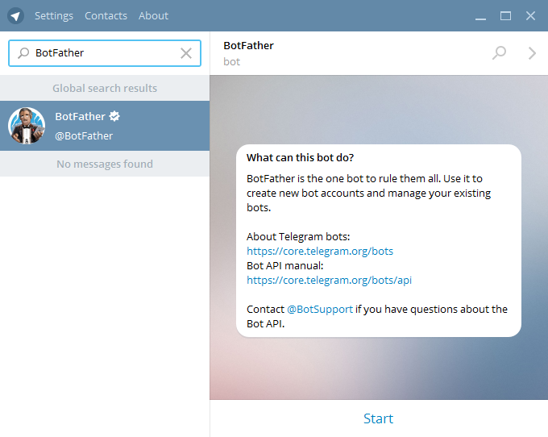
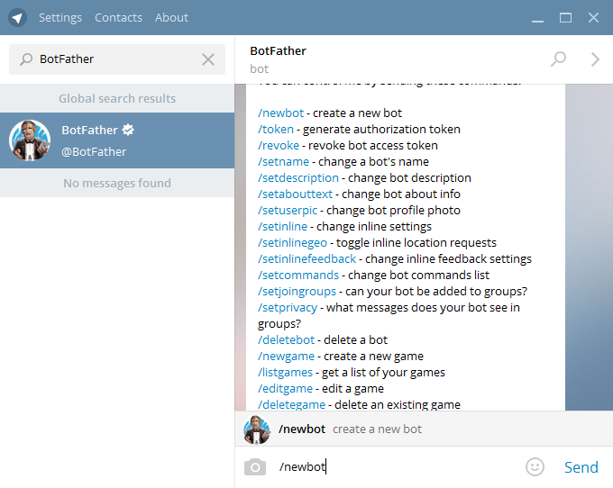
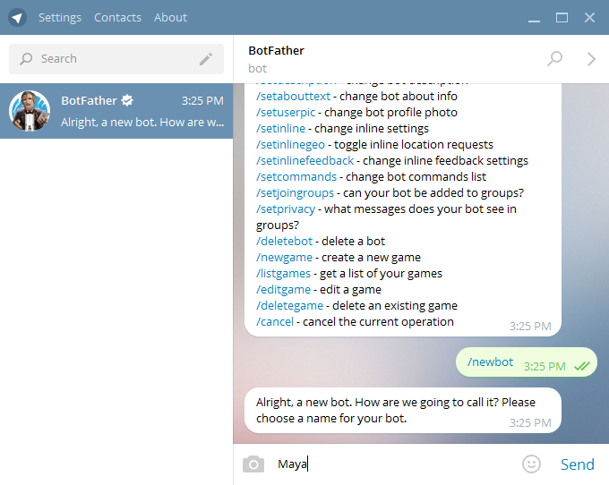
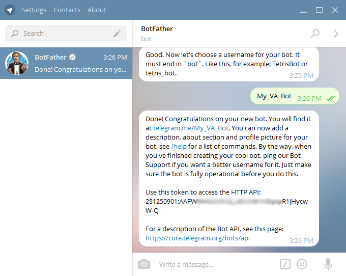
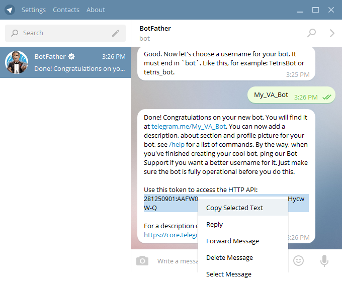
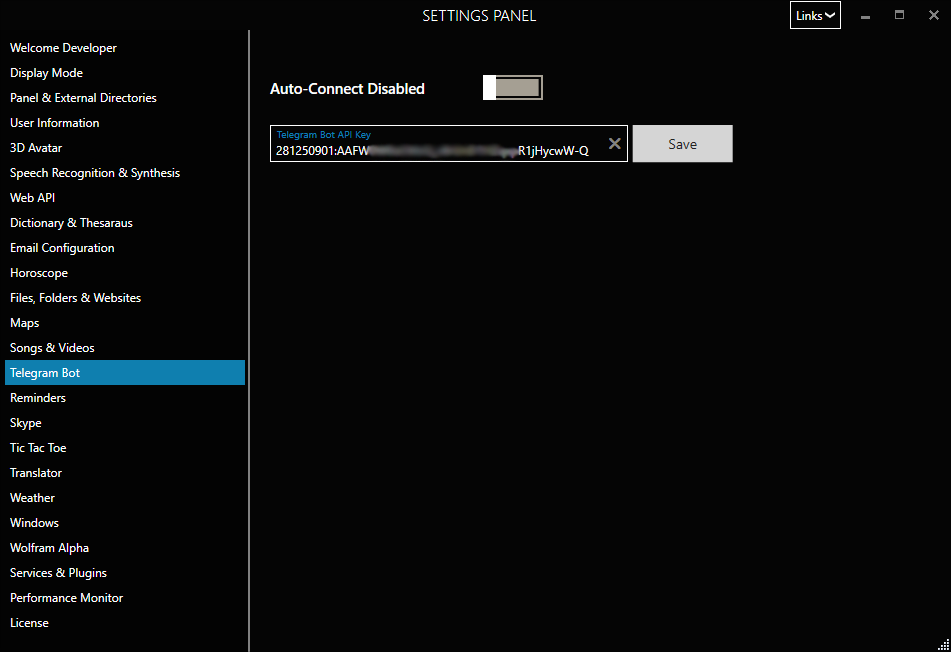

Telegram Integration
Syn Virtual Assistant can be integrated to work with Telegram API. For this developers would need to create a new (personal) Bot in telegram and obtain its HTTP API Access Token.
To obtain a Telegram API Access Token
- Download Telegram to your Desktop or Mobile from Telegram
- Search for BotFather and then click on Start.

- Type /newbot

- Enter a display name for your bot. In our example we've used Maya

- After you've specified the bot name, enter a unique Bot name. You can use _ as separators. For this tutorial we've used the name My_VA_Bot as the Bot name.

- After that you'll be presented with the HTTP Access Token.

- Copy the HTTP API access token as shown below.

- Open the Settings Panel in Syn Virtual Assistant, select Telegram Bot
- Paste the copied Token and press Save.

- Enabled Auto-Connect and restart Syn Virtual Assistant.
Congratulations! You can now control your Virtual Assistant using Telegram.